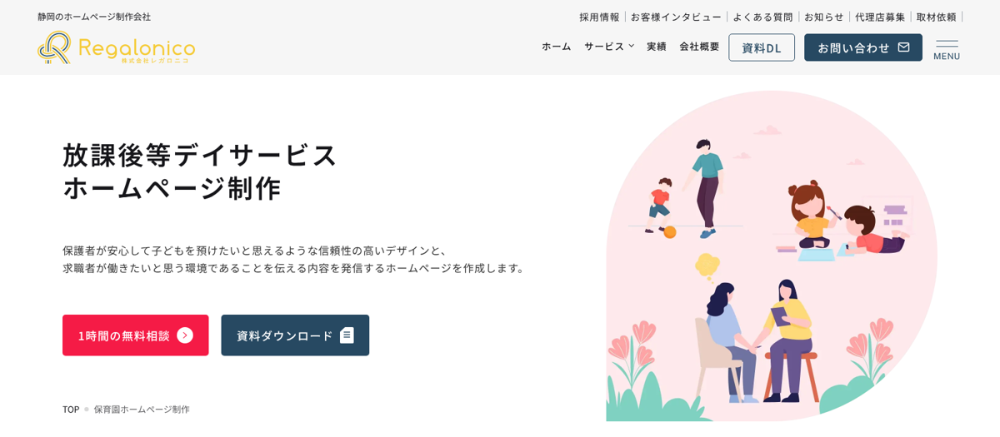
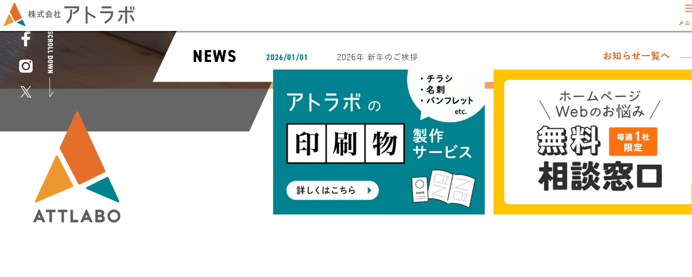

放課後等デイサービス（放デイ）のホームページを見るのは、主にお子さんの通う先を探している保護者です。「この事業所なら安心して預けられるか」「送迎や曜日の都合は合うか」を、短い時間で判断しようとしています。あわせて、相談支援専門員や学校の先生、働く場所を探している求職者も目を通します。
さらに放デイでは、支援プログラムや自己評価・保護者評価の結果をインターネット等で公表することが求められており、ホームページは制度上の公表の場にもなっています。作ったあとも、空き状況や活動の様子、毎年の評価結果を更新し続けられるかが大切です。
この記事では、放デイのホームページ制作に対応している5社（福祉ITパートナー・tomonico・Onenet・レガロニコ・アトラボ）について、各社の公式サイトで確認できた料金や対応内容を比較します。掲載順は、1年間の費用の安い順（最も安いプランの1年目の目安・税込相当）です。特定の会社を優先する並べ方はしていません。
目次

5社の違いを一覧で比べられます。1年間にかかる費用の目安（初期費用＋月額×12か月）を中心に載せ、内訳は小さく添えています。金額は税込相当（税別表示の会社は10％を加えた額）です。
← 左右にスライドして比較できます →
| 比較項目 | 福祉ITパートナー低価格・短納期型 | tomonico月額保守・更新代行型 | Onenet福祉特化・自社更新型 | レガロニコ放デイ専用プラン・オリジナルデザイン型 | アトラボWordPress・管理プラン型 |
|---|---|---|---|---|---|
| 1年間の費用の目安税込相当・初期費用＋月額×12か月 | 19,800円～55,000円ライト19,800円／ブランディング55,000円（月額なし。更新を自社で行う場合。税区分は公式サイトに記載なし） | 117,480円初期0円＋月額9,790円×12か月（トモニコプラン・3年契約） | 197,560円初期107,800円＋月額7,480円×12か月（5ページまで） | 220,000円～お試しホームページ220,000円～（月額は公式サイトで確認できず）。放デイ向け制作は880,000円～ | 363,000円～初期297,000円～（テンプレート5ページ）＋基本管理プラン月額5,500円×12か月 |
| ページ構成 | ライト1ページ／ブランディングは構成を提案 | 基本7ページ | 5ページまで（複数事業所は10ページまで） | 放デイ向け制作は3～30ページ／お試しは1ページ～ | テンプレートは5ページ。追加は別料金 |
| 公開後の更新 | 自分で更新できる。更新代行は別途相談 | 月額内で更新を代行（5営業日以内が目安）。ブログ・お知らせは自社でも更新可 | 自分で編集できる（マニュアルあり） | 更新システムを導入し、操作方法をレクチャー。放デイ向け制作には更新対応も含む | WordPressで自分で更新（マニュアルあり）。上位の管理プランで更新作業枠あり |
| 制作期間の目安 | 最短48時間～（目安14日） | 公式サイトに記載なし | 公式サイトに記載なし | 放デイ向け制作3～6か月／お試し3日～1か月 | おおよそ2～6か月 |
| 放デイに関する公式サイトの記載 | 対応事業所に放課後等デイサービス・児童発達支援を明記 | 制作実績に放課後等デイサービスあり | 制作事例・サンプルに児童発達支援・放課後等デイサービスあり | 放デイ向けの専用ページあり。静岡県内の放デイの制作実績あり | 社会福祉施設向けページのお客様の声に放デイ事業所あり |
| こんな方に | まず短期間・低予算で公開したい事業所 | 空き状況やお知らせの更新も任せたい事業所 | 福祉出身の担当者に相談し、自分たちで更新したい事業所 | 利用者募集と職員採用の両方に、時間と予算をかけて取り組みたい法人 | WordPressで更新しつつ、サーバーや保守も同じ会社にまとめたい事業所 |
※2026年11月11日に各社の公式サイトで確認した情報です。料金やサービス内容は変更される場合があります。契約前に必ず公式サイトで最新情報をご確認ください。
※1年間の費用の目安は、サーバー・ドメインの実費を含みません（アトラボの基本管理プランはサーバー容量5GBを含みます）。福祉ITパートナーは月額契約がなく、公開後の更新を自社で行う前提の金額で、更新代行の費用は含みません。
※福祉ITパートナーの料金（19,800円・55,000円）は、2026年11月11日時点の料金ページに税込・税別の記載がなかったため、表示額のまま載せています。
※レガロニコの金額は公式サイトの税別表示（お試し200,000円～、放デイ向け制作800,000円～）に10％を加えた額です。月額の保守費用は公式サイトで確認できなかったため含めていません。
※アトラボのテンプレート利用プラン（297,000円～）はWordPress制作のページに、基本管理プラン（月額5,500円・税込）は料金ページに掲載されています。テンプレート利用プランのページには税区分の記載がなく、料金ページの「料金はすべて税込価格」という表記にならって税込として扱っています。
※「放デイに関する公式サイトの記載」は、各社の公式サイトで確認できた範囲です。記載がないことは、対応できないという意味ではありません。

1年間の費用は、福祉ITパートナーが19,800円～55,000円、tomonicoが117,480円です。前者は更新を自分たちで行う前提、後者は月額内で更新を任せられる点が違います。
tomonicoは月額の保守費用の中で文章や写真の差し替えを依頼できます。アトラボは管理更新活用プラン（月額16,500円・税込）以上で、毎月の更新作業の時間枠が付きます。
3社とも、公開後に自分で文章や写真を更新できると案内しています（Onenetとアトラボはマニュアルを提供）。季節の行事や長期休暇のプログラムをこまめに載せたい事業所向けです。
3社は、公式サイトの制作実績やお客様の声に放デイ事業所が載っています。Onenetは制作事例・サンプルに放デイが掲載されています。実績のページで、事業所の規模や雰囲気が自分たちに近いかも見ておきましょう。
放デイ向けのプランで、事業目標の整理、キーワード調査、取材、フルオリジナルのデザインまでを案内しています。費用は80万円～（税別）、制作期間は3～6か月と、5社の中でも大きめです。

福祉ITパートナー
 公式サイトを見る ↗
公式サイトを見る ↗
福祉・介護・医療分野のホームページ制作と、IT活用の支援を行っています。公式サイトの料金ページでは、対応する事業所として放課後等デイサービス・児童発達支援・保育所等訪問支援・障害児相談支援などを挙げています。なお、当サイトの運営者は同社の関連会社です。他社と同じ基準で確認し、掲載しています。
おまかせライトは1ページ構成（制作中の修正1回まで）、ブランディングは事業所に合わせて構成を提案（修正3回まで）です。2026年11月11日時点の料金ページには、2プランの金額について税込・税別の記載がありませんでした。サーバー契約・ドメイン取得・公開作業は基本料金に含まれません。
メリット
- 1年間の費用が5社の中で最も低い
- 素材がそろえば最短48時間からと、制作期間が短い
- スマホ対応、基本のSEO設定、Googleマップの設置、LINE・Instagram等へのリンク設置が両プランに含まれる
- ブランディングプランでは「1日の流れ・利用対象・支援内容」の掲載、文章の整理・言い換え、写真の明るさやトリミングの調整まで相談できる
- 公開後の文章修正や写真の差し替えは、自分で行える
注意点
- ライトは1ページのみで、問い合わせフォームは付かない（導線の設置のみ）。支援プログラムや評価結果のページを分けて作りたい場合は、ブランディングで構成を相談する
- サーバー・ドメインの契約と公開作業は別で、実費は自分で確認する必要がある
- 公開後の更新代行は、必要に応じて別途相談となる（金額の記載なし）
- 公式サイトで確認できた制作実績の例は就労継続支援B型とグループホームで、放デイの実績例は確認できなかった
こんな方におすすめ
開所に合わせて短期間で公開したい事業所、費用を抑えつつ福祉の現場を知る相手に相談したい事業所、更新は自分たちで行える事業所
tomonico
 公式サイトを見る ↗
公式サイトを見る ↗
障害福祉事業所に特化したホームページ制作と更新代行を行う会社です。公式サイトによると代表自身が障害当事者で、ヒアリングはWeb会議、更新の依頼はチャットツールと、すべてオンラインで進めます。制作実績には、三重県の放課後等デイサービスが掲載されています。
公式サイトの表示は税別で、トモニコプランは月額8,900円（3年間）です。ほかに、ミドルプラン（初期189,000円・月額5,000円。契約6か月目まで保守・更新費は無料）、フリープラン（初期298,000円・保守契約なし）があります。
メリット
- 制作費と保守費を、毎月定額の料金にまとめたプランがある
- 月額の保守費用の中で、文章の書き換え・写真の差し替え・簡易なレイアウト変更を依頼できる。空き状況の変更など、こまめな更新を任せやすい
- お問い合わせフォーム、Googleマップ表示、ブログ、SNSへのリンク、基本のSEO対策、Googleビジネスプロフィールの基本設定が全プランに含まれる
- ドメイン・サーバーの契約もサポートしてもらえる
注意点
- 基本は7ページ程度で、超える場合は1ページごとに追加費用がかかる
- トモニコプランは月額費用がずっと続く（契約4年目以降は月額3,900円（税別）の契約に変更可）
- 更新は依頼する形が基本で、反映は土日祝を除く5営業日以内が目安。当日中に変えたい情報は、自社で更新できるブログ・お知らせ機能を入れておくとよい
- 制作期間の目安は、公式サイトで確認できなかった
こんな方におすすめ
職員にホームページの知識がなく、制作から更新まで任せたい事業所、毎月の費用を定額にしたい事業所
Onenet（合同会社フェレット）
 公式サイトを見る ↗
公式サイトを見る ↗
福祉業界出身の技術者で構成される会社で、福祉事業所向けのホームページ制作サービス「Onenet」を提供しています。公式サイトの制作事例・サンプルの最初に「児童発達支援・放課後等デイサービス」が掲載されています。
公式サイトの表示は税別で、5ページまで（1事業所のみ掲載）は初期98,000円・月額6,800円です。複数の事業所を掲載する10ページまでのプランは初期148,000円・月額9,800円、ブログ機能の設置は29,800円です。
メリット
- 福祉業界出身の技術者が、事業所に合わせて設計とデザインを行う
- スマホ対応、問い合わせフォーム、Googleマップへの登録、独自ドメインの取得が料金プランに含まれる
- 納品後は、テキストや画像を自分で編集でき、編集用のマニュアルも渡される
- 複数の事業所を同時に掲載するプランがあり、放デイと児童発達支援を別の事業所で運営している法人にも合わせやすい
注意点
- 月額費用が続く。お知らせやブログで活動を発信したい場合、ブログ機能は別料金（29,800円・税別）
- 1ページタイプ（29,800円）は訪問介護・訪問看護のみが対象のため、放デイは5ページまでのプラン以上になる
- 制作期間の目安は、公式サイトで確認できなかった
- 制作時には、掲載内容を入力する素材提出シートの作成が必要になる
こんな方におすすめ
福祉の現場を知る担当者に相談しながら作りたい事業所、公開後は自分たちで更新したい事業所、複数の事業所を運営している法人
株式会社レガロニコ

公式サイトを見る ↗静岡市のホームページ制作会社で、業種を限らず制作しています。公式サイトには放課後等デイサービス向けの専用ページがあり、保護者向けの情報整理と職員採用の両方を意識したサイトづくりを案内しています。制作実績には、静岡県内で放課後等デイサービスを運営する法人が複数掲載されています。
公式サイトの表示は税別です。放課後等デイサービス向けのホームページ制作は800,000円～（ページ数・クオリティにより80万～300万円程度、3～30ページ、制作期間3～6か月）、テンプレートを使う「お試しホームページ制作」は200,000円～（20万～35万円程度、1ページ～、制作期間3日～1か月）です。月額の保守費用は公式サイトで確認できませんでした。
メリット
- 放課後等デイサービス向けの専用ページがあり、保護者が知りたい情報（サービス内容・料金・送迎・定員・スタッフ体制・1日の流れなど）を目立つ場所に整理する方針を示している
- 放デイ向け制作には、事業目標の整理、市場分析、キーワード調査、取材、導線設計、フルオリジナルのデザインが含まれる
- 両プランとも更新システムを導入し、操作方法のレクチャーを受けられる。放デイ向け制作には更新対応や解析ツールの導入、レポート配信も含まれる
- 無料相談は対面またはZoomで受け付けている
注意点
- 放デイ向け制作は80万円～（税別）と5社の中で最も高く、制作期間も3～6か月かかる。開所日が迫っている場合は日程の確認が必要
- 月額の保守・更新費用は、公式サイトで金額を確認できなかった
- お試しホームページはテンプレートのデザインで、取材やキーワード調査などは含まれない
- 制作実績は静岡県内の事業所が中心。県外からの依頼はZoomでの相談が前提になると考えられるため、問い合わせ時に確認したい
こんな方におすすめ
複数の事業所を運営し、利用者募集と職員採用の両方に予算をかけて取り組みたい法人、取材やキーワード調査まで任せたい法人
株式会社アトラボ

公式サイトを見る ↗千葉県のホームページ制作会社で、業種を限らず制作しています。公式サイトの「社会福祉施設」向けページでは、千葉県内での社会福祉施設の制作実績を紹介しており、お客様の声には放課後等デイサービスを行う事業所が掲載されています。
WordPressのテンプレート利用プランは、5ページ・WordPress基本設定込みで297,000円～（ディレクション・ライティング・カスタム投稿の設定などは別途）です。オリジナルデザインの制作プランは495,000円からです。公開後の管理プランは、基本管理プラン（月額5,500円）、管理更新活用プラン（月額16,500円・更新作業1時間／月）、積極活用プラン（月額33,000円・更新作業5時間／月）などがあります（いずれも税込）。制作の流れのページでは、契約時に月額管理費用（6か月分）を支払う流れが案内されています。
メリット
- WordPressで制作し、お知らせやブログを自分で更新できる（ログイン・更新方法を記した専用マニュアルあり）
- 管理プランの料金が公開されており、サーバー・セキュリティ管理・定期バックアップ・WordPressの管理まで任せる場合の費用がわかる（基本管理プランではサーバー以外の多くの項目がオプション）
- オリジナルデザインのプランがあり、職員採用ページの制作にも力を入れていると案内している
- 制作期間終了後30日間は、誤字・脱字やリンク漏れを無料で修正すると案内している
注意点
- 5社の中で1年間の費用が最も高く、ディレクションやライティングが別料金になることがある
- 更新代行の時間枠が付くのは管理更新活用プラン（月額16,500円）以上。基本管理プランでは、セキュリティ管理やバックアップもオプション扱い
- 制作期間はおおよそ2～6か月
- 千葉県内の顧客は原則として訪問での打ち合わせが無料（定額制プランを除く）。県外はオンライン等での相談が前提になる
こんな方におすすめ
WordPressで自分たちで更新しつつ、サーバーや保守は任せたい事業所、千葉県内で対面の打ち合わせを希望する事業所

1年間の費用で比べたうえで、3年間の総額も確認しましょう。放デイでは、毎年の自己評価・保護者評価の結果や支援プログラムの見直しなど、年単位で必ず発生する更新があります。更新を誰が行うかも費用の一部として考えることが大切です。
← 左右にスライドして比較できます →
| 比較項目 | 福祉ITパートナーライト／ブランディング | tomonicoトモニコプラン | Onenet5ページまで | レガロニコお試し／放デイ向け制作 | アトラボテンプレート＋基本管理 |
|---|---|---|---|---|---|
| 1年間の費用の目安税込相当・初期費用＋月額×12か月 | 19,800円～55,000円月額なし。更新を自社で行う場合 | 117,480円初期0円＋月額9,790円×12か月 | 197,560円初期107,800円＋月額7,480円×12か月 | 220,000円～お試し220,000円～／放デイ向け880,000円～（月額は確認できず） | 363,000円～初期297,000円～＋月額5,500円×12か月 |
| 3年間の目安 | 19,800円／55,000円 （公開後の更新を自社で行う場合） |
352,440円 | 377,080円 | 220,000円～＋月額（確認できず） | 495,000円～ |
| サーバー・ドメイン | 基本料金に含まれない（取得・公開作業は別途） | 契約をサポート（実費の扱いは要確認） | 独自ドメインの取得を含む（実費の扱いは要確認） | 公式サイトで要確認 | 基本管理プランにサーバー容量5GBを含む（ドメインは要確認） |
| 毎年の評価結果などの更新 | 自分で更新 | 月額内で代行を依頼 | 自分で更新 | 更新システムで自分で更新（放デイ向け制作は更新対応を含む） | 自分で更新（管理更新活用プラン以上は更新作業枠あり） |
| 追加費用がかかるもの | 公開作業、公開後の更新代行（相談） | 8ページ目以降の追加ページ、大きなレイアウト変更 | ブログ機能（29,800円・税別）、ページ追加 | ページ数・クオリティにより変動（見積もり） | ディレクション、ライティング、写真撮影（55,000円～）、追加ページ（33,000円～） |
※1年目＝初期費用＋月額×12か月、3年間＝初期費用＋月額×36か月です。税別表示の会社は10％を加えた額で計算しています（tomonico：月額8,900円×1.1＝9,790円、Onenet：98,000円×1.1＝107,800円・月額6,800円×1.1＝7,480円、レガロニコ：200,000円×1.1＝220,000円・800,000円×1.1＝880,000円）。
※tomonicoのミドルプラン（初期189,000円・月額5,000円、税別）の1年目は、保守・更新費が無料の6か月を除いて計算すると約240,900円（税込相当）です。フリープランは初期298,000円（税込相当327,800円）で、月額の保守費用はかかりません。
※アトラボの3年間は、テンプレート利用プラン297,000円＋基本管理プラン5,500円×36か月で計算しています。
※レガロニコは月額の保守費用を公式サイトで確認できなかったため、3年間の金額に月額を含めていません。
放デイならではの費用の見方
- 年1回の評価結果の更新：自己評価・保護者評価の結果と改善の内容は、毎年公表し直すものです。PDFを差し替えるだけで済む作りか、依頼すると費用がかかるかを確認しましょう。
- 空き状況・お知らせの更新頻度：空き曜日や長期休暇のプログラムは、変わるたびに更新したい情報です。依頼してから反映までの日数（tomonicoは5営業日以内が目安）と、自分で更新できる範囲を確かめておきましょう。
- 児童発達支援を併設・追加する場合：あとから児童発達支援や別の事業所を加えると、ページ追加の費用がかかることがあります。複数事業所のプランがあるか（Onenetの10ページまでのプランなど）も比べておくと安心です。
費用の考え方は「福祉事業所のホームページ制作費用の相場」、問い合わせ時の質問例は「制作会社の選び方と質問リスト」でも詳しく解説しています。

放デイのホームページは、保護者が「子どもを預けて大丈夫か」を判断する場であり、制度上の公表を行う場でもあります。制作会社に相談する前に、次の6つを整理しておくと、ページ構成や見積もりの話が具体的になります。
1．支援プログラムと評価結果の公表ページ
2024年度の報酬改定で、放デイなどの事業所には、5領域（健康・生活、運動・感覚、認知・行動、言語・コミュニケーション、人間関係・社会性）との関連を明確にした「支援プログラム」の作成・公表が義務付けられました。2025年4月以降、公表と自治体への届出がない場合は減算の対象です。
載せたい内容
- 支援プログラム（自治体によっては届出に公表先のURLの記載を求められる）
- 事業所の自己評価・保護者評価の結果と、評価を受けて行った改善の内容（未公表の場合は減算の対象）
- 公表した日付（毎年の更新がわかるように）
制度の詳細は「放課後等デイサービスと児童発達支援の違い」「障害福祉事業所が公表すべき情報まとめ」で解説しています。届出の方法は自治体ごとに異なるため、所管の自治体の案内を確認してください。
2．平日・休日・長期休暇の過ごし方
放デイは、学校のある日の放課後と、土曜日や夏休みなどで過ごし方が大きく変わります。保護者はその両方を知りたいと考えています。
載せたい内容
- 平日（放課後）と休日・長期休暇の1日の流れ
- 活動の内容と、支援プログラムの5領域とのつながり
- 宿題や学習、外出・行事などの考え方
3．送迎と利用曜日・空き状況
保護者が最初に確かめるのは、「通わせられるか」という条件です。条件が合わない事業所に問い合わせる手間を減らすことは、事業所側の負担軽減にもなります。
載せたい内容
- 送迎の範囲（学校への迎え、自宅への送りの対応エリア）
- 営業日・サービス提供時間、定員
- 空き曜日の状況と、その更新日
空き状況は古いままだとかえって不信感につながります。更新日を必ず添え、更新を誰がいつ行うかを決めておきましょう。
4．子どもの写真・作品の扱い
活動の写真は雰囲気が伝わりやすい一方、子どもの顔や名前、学校がわかる情報の掲載には十分な配慮が必要です。
決めておきたいこと
- ホームページ・SNSへの掲載について、保護者から書面で同意を得る（掲載範囲と、取り下げの申し出方も伝える）
- 顔がわからない角度や後ろ姿、手元・作品中心の写真を基本にする
- 名札、制服、学校名、自宅周辺がわかる背景が写り込んでいないか確認する
掲載のルールは職員間で共有し、ホームページとSNSで扱いをそろえておきましょう。問い合わせで受け取る個人情報の扱いは「問い合わせフォームと個人情報」で解説しています。
5．利用開始までの流れと費用
初めて障害児通所支援を利用する保護者にとって、受給者証や利用料の仕組みはわかりにくいものです。
載せたい内容
- 見学・体験 → 受給者証の申請 → 契約・利用開始のステップ
- 受給者証をまだ持っていない段階でも相談できること
- 利用者負担には所得に応じた上限があることと、おやつ代などの実費
制度の説明は平易な言葉にし、詳しくは市町村の窓口や相談支援専門員に相談できることも添えておくと親切です。
6．相談支援専門員・学校・求職者向けの情報
放デイは、相談支援専門員や学校との連携が欠かせません。また、児童指導員や保育士などの職員採用でもホームページが見られます。
載せたい内容
- 関係機関向けの連絡先と、見学・空き状況の問い合わせ方法
- 受け入れている子どもの年齢や特性、得意とする支援
- 職員紹介と採用情報（働き方、研修、資格の活かし方）
採用ページの作り方は「福祉事業所の採用ページ設計」で紹介しています。

放課後等デイサービスのホームページは、作って終わりではありません。支援プログラムや評価結果の公表、空き状況、活動の様子と、継続して更新が必要な情報が多いのが特徴です。初期費用だけでなく、更新を誰が行い、いくらかかるかで依頼先を選びましょう。
- 1年間の費用を最も抑え、短期間で公開したい → 福祉ITパートナー（更新は自分で）
- 空き状況などの更新も含めて任せたい → tomonico（月額内で更新を代行）
- 福祉出身の担当者に相談し、自分たちで更新したい → Onenet
- 取材やキーワード調査を含め、時間と予算をかけて作りたい → レガロニコ（費用は高め）
- WordPressで更新しつつ、サーバーや保守も同じ会社にまとめたい → アトラボ
どの会社を選ぶ場合も、1年目と3年間の総額、公開後に依頼できる範囲、サーバー・ドメインの名義を契約前に確認しましょう。そのうえで、送迎範囲や空き状況、子どもの写真の掲載ルールといった放デイならではの内容を、制作会社と一緒に整理することが、保護者からの問い合わせにつながる第一歩です。
7．よくある質問
支援プログラムは、ホームページに載せないといけませんか？
支援プログラムは、インターネットの利用その他の方法により広く公表することとされています。ホームページを持っていない場合は、会報や事業所への掲示などで公表する方法を案内している自治体もあります。ただし、届出の様式に公表先のURLを記入する自治体もあるため、ホームページがあると手続きも確認もしやすくなります。具体的な方法は、所管の自治体の案内に従ってください。
子どもの写真をホームページに載せてもよいですか？
掲載する場合は、保護者から事前に同意を得ることが前提です。同意書には、ホームページ・SNS・パンフレットなど掲載する場所と、掲載をやめてほしいときの連絡方法を書いておきましょう。同意がある場合でも、顔がわからない写真や作品の写真を中心にし、学校名や自宅周辺がわかる情報が写り込まないよう確認すると安心です。
児童発達支援も併設しています。ホームページは分けたほうがよいですか？
1つのホームページの中で、サービスごとにページを分ける形が一般的です。対象年齢や過ごし方が違うため、保護者が自分の子どもに関係する情報をすぐ見つけられるようにしましょう。支援プログラムや評価結果も、どのサービスのものかがわかるように掲載します。複数事業所の掲載に対応したプランや、ページ追加の費用も確認しておきましょう。
開所前ですが、いつからホームページを用意すればよいですか？
見学や利用の問い合わせを受けたい時期から逆算して準備しましょう。制作期間は、短いところで最短48時間から、長いところでは3～6か月と、会社によって大きく違います。開所前は「開所予定日」「見学の受付方法」などを中心に公開し、開所後に活動の様子や評価結果を加えていく方法もあります。掲載したい項目の全体像は「福祉事業所のホームページに載せるべき項目チェックリスト」でも紹介しています。
本記事の比較について

本記事は、各社の公式サイトで公開されている情報をもとに、料金・特徴・サポート内容などを比較しています。確認日は2026年11月11日です。制度については、千葉県・鹿児島県・堺市が公開している支援プログラムと自己評価の公表に関する案内を参照しました。
金額は税込相当に統一し、税別表示の会社は10％を加えた額で計算しています。税区分の記載がない金額は、その旨を注記しています。掲載順は、1年間の費用の安い順（最も安いプランの1年目の目安・税込相当）です。
当サイトは、掲載企業の一社である福祉ITパートナーの関連会社が運営しています。同社も他社と同じ基準で確認・掲載しており、広告費・紹介料は受け取っていません。
料金やサービス内容は各社の都合により変更される場合があります。最新の情報は、各社の公式サイトで直接ご確認ください。